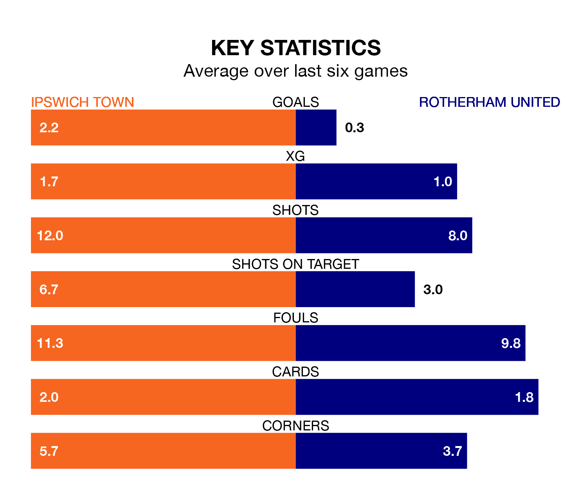

Relegation candidates Rotherham United face a challenge away against high-flying Ipswich Town at Portman Road on Tuesday.
Rotherham United are rooted to the bottom of the EFL Championship table, and have picked up just three wins and 10 draws in their 32 games to date.
The Blues, meanwhile, are fourth in the standings with 66 points, having won 19 and drawn nine, and are 12 points behind table-toppers Leicester City.
Ipswich are in reasonable form in EFL Championship, with three wins and two draws from their last six games.
With no wins and a draw over that period, Rotherham's form is much worse – they have taken one point from 18, compared to Town's 11.
With 26 goals in 32 games so far this season, United are the league's joint-second-lowest scorers with 0.8 goals per game. And they are conceding more than average, letting in 60 goals at a rate of 1.9 per game.
The Blues, meanwhile, are above average scorers, with 1.9 goals per game, compared to a league average of 1.4. They have conceded 1.3 goals per game.
In the last 10 years, Ipswich and Rotherham have played each other on 14 occasions. Ipswich won four of them, Rotherham eight, and they drew twice.
On average, the Blues scored 1.1 goals and the Millers 1.3 in those matches.
Their last meeting was on November 7, when they played out a 2-2 draw.
The hosts' Leif Davis is the league's most creative player, racking up 12 assists in 29 appearances so far this season.
For the Millers, Cafú has set up the most goals, having laid on three assists in 21 games.
Ipswich's last match was on Saturday, a 2-1 win against Swansea City, with Conor Chaplin and Nathan Broadhead getting the goals for the Blues.
Rotherham lost 1-0 against Watford last time out, also on Saturday.
Tuesday's match will be refereed by Keith Stroud, who has taken charge of 16 EFL Championship games so far this season, issuing one red card and booking 79 players. He has awarded one penalty.
The last Ipswich game Stroud refereed was a 4-3 home win against Blackburn Rovers on September 23. His last Rotherham match was their 1-0 loss at home against Stoke City on January 13.
Updated: 12:18 (UTC), 19/02/24